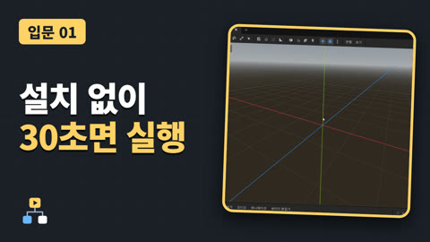
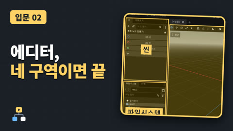
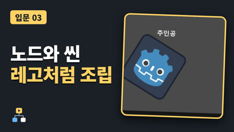
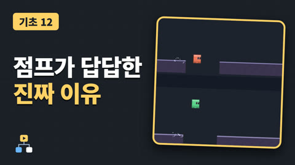

게임 엔진, 받자마자 30초면 켜집니다
무료 게임 엔진 Godot(고도)을 내려받아 처음 켜 보고, 첫 프로젝트를 만드는 데까지 갑니다.
영상은 곧 공개됩니다
AI로 게임을 만들어도, 이건 알아야 합니다
고도(Godot) 엔진을 화면으로 직접 보여 주는 유튜브 채널의 편 목록입니다. 예제 프로젝트가 있는 편은 여기에서 받을 수 있습니다.

무료 게임 엔진 Godot(고도)을 내려받아 처음 켜 보고, 첫 프로젝트를 만드는 데까지 갑니다.

버튼이 많아 보이는 Godot 에디터를 네 구역(씬, 파일시스템, 작업 화면, 인스펙터)으로 나눠서 한 번씩 써 봅니다.

Godot의 가장 중요한 두 낱말, 노드와 씬을 알아봅니다.
